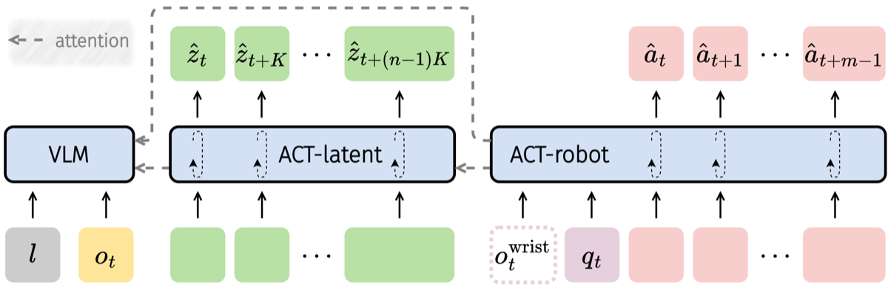

Why it matters왜 중요한가
A latent action that ignores physics is a plan the robot cannot actually execute.
물리를 무시한 잠재 행동은, 로봇이 실제로 실행할 수 없는 계획이다.
Robot data with action labels is scarce; human video is abundant but action-free. Latent actions bridge them by turning frame-to-frame motion into a shared "pseudo-action" vocabulary. But prior latent action models (LAPA, Moto, GR00T) learn that vocabulary by reconstructing future pixels — and many physically critical motions barely move any pixels. So the latent space is physically ungrounded, and the knowledge transfers poorly to real control. villa-X attacks both halves of the pipeline: how latent actions are learned (add proprioceptive grounding) and how they are used (a structured joint-diffusion policy instead of mere weight-init or a detached planner).
행동 라벨이 붙은 로봇 데이터는 귀하고, 사람 영상은 풍부하지만 행동 라벨이 없다. 잠재 행동은 프레임 간 움직임을 공통 "유사 행동(pseudo-action)" 어휘로 바꿔 둘을 잇는다. 그러나 기존 모델(LAPA·Moto·GR00T)은 미래 픽셀 복원으로 그 어휘를 배우는데, 물리적으로 중요한 움직임 상당수는 픽셀을 거의 바꾸지 않는다. 그래서 잠재 공간이 물리적으로 정초되지 않고, 실제 제어로의 전이가 부실하다. villa-X는 파이프라인 양쪽을 모두 손본다: 잠재 행동을 어떻게 배우나(고유수용 정초 추가)와 어떻게 쓰나(단순 가중치 초기화·분리된 플래너 대신 구조화된 조인트 디퓨전 정책).

By the numbers핵심 숫자
Google robot (SOTA)SIMPLER 평균 성공률
Google robot (SOTA)
WidowX robot (SOTA)SIMPLER 평균 성공률
WidowX robot (SOTA)
2×300M ACT expertsPaliGemma VLM +
2×300M ACT 전문가
zero-shot, no hand data다관절 XHand —
손 데이터 없이 제로샷
embodiment finetuneLAM → ACT 사전학습 →
임바디먼트 파인튜닝
mask all vs. half latents어텐션 마스킹 —
전부 vs. 절반 잠재
Results — SOTA on SIMPLER, both robots결과 — SIMPLER 양쪽 로봇 모두 SOTA
| Method | Google robot | WidowX |
|---|---|---|
| OpenVLA | — | low |
| LAPA | mid | mid |
| π₀ | high | high |
| villa-X (w/o latent) | ↓ drop | ↓ drop |
| villa-X (full) | 77.7 | 62.5 |
Note: villa-X reports the best average on both Google robot and WidowX in SIMPLER, surpassing VLA baselines (RT-1-X, Octo, OpenVLA, RoboVLMs, π₀) and latent-action methods (Moto, LAPA). Baseline cells abbreviated; the "w/o latent" ablation shows a large drop, confirming the latent expert is load-bearing. villa-X also reports SOTA across all four LIBERO suites.
참고: villa-X는 SIMPLER에서 Google robot·WidowX 양쪽 최고 평균을 기록하며 VLA 베이스라인(RT-1-X·Octo·OpenVLA·RoboVLMs·π₀)과 잠재행동 기법(Moto·LAPA)을 능가한다. 베이스라인 수치는 요약 표기했으며, "w/o latent" 어블레이션의 큰 하락은 잠재 전문가가 핵심임을 확인한다. villa-X는 LIBERO 4개 스위트 전부에서도 SOTA를 보고한다.
In one diagram한 장의 그림
Idea: ground the latents, then plan with them아이디어: 잠재를 정초하고, 그것으로 계획하라
Proprio-grounded LAM
On top of the usual visual inverse/forward dynamics, villa-X adds a proprioceptive FDM: given the current state and latent zt, predict future robot states q and actions a. Jointly forecasting pixels and physics forces latents to encode rotation/gripper moves that pixels miss. An embodiment context vector ce (dataset-ID + control-freq) keeps latents consistent across heterogeneous robots.
기존 시각 역/순방향 동역학에 더해, villa-X는 고유수용 FDM을 추가한다: 현재 상태와 잠재 zt로 미래 로봇 상태 q·행동 a를 예측. 픽셀 과 물리를 함께 예측하니 픽셀이 놓치는 회전·그리퍼 동작까지 잠재가 담는다. 임바디먼트 컨텍스트 ce(데이터셋 ID + 제어 주파수)가 이질 로봇 간 잠재 일관성을 유지한다.
Joint diffusion actor
Instead of using latents only to init weights (LAPA) or as a detached planner (GO-1), villa-X factorizes the policy into πlatent (plans from vision+language) and πrobot (acts, conditioned on the latent plan). Both are trained in one conditional flow-matching objective, so the latent plan is a real mid-level interface — not a throwaway prior.
잠재를 가중치 초기화용(LAPA)이나 분리된 플래너(GO-1)로만 쓰지 않고, villa-X는 정책을 πlatent(시각+언어로 계획)와 πrobot(잠재 계획 조건으로 실행)로 분해한다. 둘을 하나의 조건부 flow-matching 목적함수로 학습 — 잠재 계획이 버려지는 사전(prior)이 아니라 실제 중간 인터페이스가 된다.
How it works어떻게 작동하나
- Train the LAMLAM 학습Learn discrete latent tokens (VQ, codebook 32) from frame pairs via inverse + forward dynamics, with the proprio-FDM and embodiment context added. For human videos lacking proprio labels, drop only that term.프레임 쌍에서 역+순방향 동역학으로 이산 잠재 토큰(VQ, 코드북 32)을 학습하되, proprio-FDM과 임바디먼트 컨텍스트를 추가. proprio 라벨 없는 사람 영상은 그 항만 생략.
- Pre-train the ACTorACTor 사전학습Freeze the LAM, attach a PaliGemma VLM and two 18-layer experts (ACT-latent, ACT-robot, 300M each), and jointly diffuse latent + robot actions over mixed human/robot data.LAM을 고정하고 PaliGemma VLM과 18층 전문가 둘(ACT-latent·ACT-robot, 각 300M)을 붙여, 사람·로봇 혼합 데이터로 잠재+로봇 행동을 조인트 디퓨전.
- Regularize with masking마스킹으로 정규화50% of the time mask all robot→latent attention; otherwise mask half the latent tokens. This stops the robot expert from learning trivial shortcuts on the latent plan.50% 확률로 로봇→잠재 어텐션 전부 마스킹, 나머지는 잠재 토큰 절반 마스킹. 로봇 전문가가 잠재 계획에 의존하는 지름길 학습을 차단.
- Finetune per embodiment임바디먼트별 파인튜닝Adapt to a target robot — gripper arm or 12-DoF dexterous hand — for the final policy; the latent expert still plans zero-shot for unseen arms and open-vocabulary symbol cards.대상 로봇(그리퍼 팔 또는 12-DoF 다관절 손)에 맞춰 최종 정책을 적응. 잠재 전문가는 미학습 팔·개방어휘 기호 카드에 대해서도 제로샷으로 계획.
What to take away그래서, 가져갈 것
Pixels aren't physics. Forcing latents to also predict proprioceptive state is a cheap, generic fix for the "ungrounded latent" problem — and it measurably helps downstream control.
픽셀 ≠ 물리. 잠재가 고유수용 상태까지 예측하게 만드는 건 "정초 안 된 잠재" 문제에 대한 값싸고 일반적인 해법이며, 하류 제어에 측정 가능한 도움을 준다.
Latent as a real interface. Joint diffusion makes the latent plan a load-bearing mid-level layer between VLM intent and motor control — not a discarded init.
인터페이스로서의 잠재. 조인트 디퓨전은 잠재 계획을 VLM 의도와 모터 제어 사이의 실제 중간 계층으로 만든다 — 버려지는 초기화가 아니라.
Zero-shot embodiment transfer. SOTA on a 12-DoF dexterous hand it never saw during pretraining — strong evidence the latent space abstracts away the body.
제로샷 임바디먼트 전이. 사전학습에서 본 적 없는 12-DoF 다관절 손에서 SOTA — 잠재 공간이 신체를 추상화한다는 강력한 증거.
A world-model angle. ACT-latent + a rendering world model can roll out a plan as video for unseen arms — latent dynamics as imagination-space planning.
월드모델 관점. ACT-latent + 렌더링 월드모델은 미학습 팔의 계획을 영상으로 펼친다 — 잠재 동역학을 상상공간 계획으로.